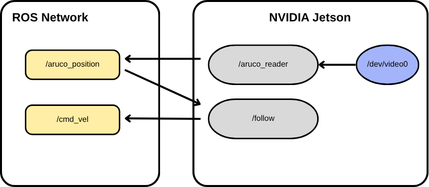

Target-Following Task Documentation
How to add ROS2 packages in a Docker container?
At first, you should create or download a ROS2 package that you want to add to a Docker container and store it on your local computer.
Step 1: Turn on the Yahboom robot and wait until it’s active and ready.
Plugin the battery, turn on the power switch.
To verify:
export ROS_DOMAIN_ID=32
ros2 topic list
Step 2: Transmit the package to the NVIDIA Jetson computer on the Yahboom robot.
This command uses SCP (Secure Copy Protocol) to securely transfer a folder from your local computer to a remote device over a network using SSH.
scp -r ~/your_local_ws/src/my_test_pkg jetson@192.168.1.119:~/custom_robot_ws/src/
your_local_ws - workspace where you currently have your package (danielfirstws_ws)
my_test_pkg - name of package you want to transmit (hello_world_pkg)
192.168.1.119 - you can check the specific IP address on Yahboom’s screen
custom_robot_ws - name of the workspace that will be created on Jetson
To verify:
ssh jetson@192.168.1.119
cd custom_robot_ws/src/
ls
Step 3: Mount the workspace with your package to a Docker container.
Modify the Docker bringup script.
run_docker_offline.sh
-v /home/jetson/custom_robot_ws:/root/custom_robot_ws \
Stopped and restarted Docker.
docker stop yahboom_robot && docker rm yahboom_robot
./run_docker_offline.sh
docker exec -it yahboom_robot /bin/bash
ls
To build the transmitted package:
docker exec -it yahboom_robot /bin/bash
cd /root/custom_robot_ws
rm -rf build install
colcon build --packages-select controller_package
echo "source /root/custom_robot_ws/install/setup.bash" >> /root/.bashrc
exit
How to modify the start-up sequence?
To make your custom-made node run automatically as the robot is powered, you need to modify the starting sequence. As the Yahboom is powered, it connects to a specific network, and a Docker container is created. Container is created with the following script, which mounts directories, sets ROS_DOMAIN_ID, and launches the bring-up program:
run_docker_offline.sh
docker run -d -it \
--name yahboom_robot \
--restart unless-stopped \
--net=host \
--privileged \
-v /home:/home \
-v /home/jetson/temp:/root/yahboomcar_ros2_ws/temp \
-v /home/jetson/rosboard:/root/rosboard \
-v /home/jetson/maps:/root/maps \
-v /home/jetson/custom_robot_ws:/root/custom_robot_ws \
-v /dev:/dev \
-v /dev/bus/usb/001/012:/dev/bus/usb/001/012 \
-v /dev/bus/usb/001/013:/dev/bus/usb/001/013 \
--device=/dev/myserial \
--device=/dev/input \
--device=/dev/astradepth \
--device=/dev/astrauvc \
--device=/dev/video0 \
-p 9090:9090 \
-p 8888:8888 -\
-e ROS_DOMAINID=32 \
yahboom_ros_offline1 \
/bin/bash -i -c "source /root/.bashrc && export ROS_DOMAIN_ID=32 && ros2 run yahboomcar_bringup Ackman_driver_R2 --ros-args -r __ns:=/robot_1"
Step 1: Create a launch file.
You need to create a launch file that will start all your custom-made nodes or processes. This example file brings up:
test node from hello_world_pkg, which publishes a simple message
node that reads an ArUco marker and publishes a topic with ArUco markers position
/aruco_positionnode the implements the following algorithm based on
/aruco_positiontopic
master.launch.py
import os
from ament_index_python import get_package_share_directory
from launch import LaunchDescription
from launch.actions import TimerAction
from launch_ros.actions import Node, PushRosNamespace
params_file = os.path.join(get_package_share_directory('controller_package'), 'config', 'params.yaml')
def generate_launch_description():
custom_node = Node(
package='hello_world_pkg',
executable='simplepub',
output='screen'
)
# ros2 run controller_package aruco_reader_node
aruco_reader = Node(
package='controller_package',
executable='aruco_reader_node',
arguments=['--output', 'robot_1'],
)
# ros2 run controller_package follow_node --output robot_1
follow = Node(
package='controller_package',
executable='follow_node',
arguments=['--output', 'robot_1'],
parameters=[params_file]
)
return LaunchDescription([
PushRosNamespace('robot_1'),
custom_node,
aruco_reader,
follow
])
Step 2: Transmit the file to the NVIDIA Jetson.
scp -r ~/mariia_ws/src/controller_package/launch/master.launch.py jetson@192.168.1.119:~/custom_robot_ws/src/controller_package/launch
Step 3: Recompile the package.
docker exec -it yahboom_robot /bin/bash
cd root/custom_robot_ws
rm -rf build install
colcon build
exit
Step 4: Create an entrypoint file on the NVIDIA Jetson.
Its main job is to configure the environment and launch two separate ROS2 processes in a specific order.
nano custom_entrypoint.sh
custom_entrypoint.sh
#!/bin/bash
source /root/.bashrc
export ROS_DOMAIN_ID=32
echo "[PROCESS 1] Starting Ackman_driver_R2 in background..."
ros2 run yahboomcar_bringup Ackman_driver_R2 --ros-args -r __ns:=/robot_1 &
sleep 2
if [ -f "/root/custom_robot_ws/install/setup.bash" ]; then
echo "[PROCESS 2] Custom_robot_ws detected. Sourcing and launching..."
source /root/custom_robot_ws/install/setup.bash
ros2 launch controller_package master.launch.py
else
echo "WARNING: Custom_robot_ws was not found!"
fi
Starting up the main program of Ackman_driver_R2 in background.
Starting custom-made master.launch.py that brings up all necessary nodes.
Step 5: Modify the run_docker_offline.sh.
Last line should be like this:
/bin/bash -i -c "/home/jetson/custom_entrypoint.sh"
Step 6: Restart the Docker container.
docker stop yahboom_robot && docker rm yahboom_robot
./run_docker_offline.sh
Pipeline for developing a vision-based algorithm on Yahboom
In this specific example, an ArUco vision-based following task was implemented. One of the Yahboom robots was a leading robot, had an ArUco marker on its back, and was controlled by command:
ros2 run teleop_twist_keyboard teleop_twist_keyboard
The second Yahboom robot was the following one. The algorithm had such a structure:
Node
aruco_readerwas detecting the ArUco marker on the back of the leading robot and defining its position. Calculated position was published to/aruco_positiontopic. Camera was accessed withcv2Python library.Node
followwas implementing the following algorithm. Based on/aruco_positiontopic data it was calculating the linear and angular velocities for Yahboom robot and publishing it tocmd_veltopic.

ArUco reading
Everything starts with setting up a publisher for a geometry_msgs/msg/Point message. With output argument, you can define a namespace.
self.position_publisher = self.create_publisher(Point, f'/{output}/aruco_position', 10)
For markers detecting DICT_4X4_50 ArUco dictionary (a set of 50 distinct 4x4 matrix markers) was used. It configures OpenCV to look specifically for markers from this dictionary.
self.aruco_dict = cv2.aruco.getPredefinedDictionary(cv2.aruco.DICT_4X4_50)
self.aruco_params = cv2.aruco.DetectorParameters()
self.detector = cv2.aruco.ArucoDetector(self.aruco_dict, self.aruco_params)
The camera local webcam stream is accessed with:
camera_index = 0
self.cap = cv2.VideoCapture(camera_index)
if not self.cap.isOpened():
self.get_logger().error("Could not open local video stream/webcam!")
return
You can check the camera index with the command:
ls -l /dev/video*
Because it doesn’t read a live ROS /camera_info topic, it utilizes a hardcoded placeholder camera matrix to approximate a standard 640x480 resolution lens profile.
self.camera_matrix = np.array([[650.0, 0.0, 320.0],
[0.0, 650.0, 240.0],
[0.0, 0.0, 1.0]], dtype=np.float32)
Timer creates a loop that calls the main function every 0.033 seconds, effectively processing the video at roughly 30 frames per second (FPS).
If frame reading is successful, it is converted to a grayscale image from BGR color so that OpenCV’s marker detection algorithms would be applicable. The algorithm scans the frame for black-and-white squares. If it finds any, it returns their pixel coordinates (corners) and their specific identities (ids).
gray = cv2.cvtColor(frame, cv2.COLOR_BGR2GRAY)
corners, ids, rejected = self.detector.detectMarkers(gray)
If Marker ID 0 is found in the frame, the script performs 3D math:
if ids is not None and 0 in ids:
idx = np.where(ids == 0)[0][0]
marker_corners = corners[idx][0]
half_l = self.marker_length / 2.0
obj_points = np.array([
[-half_l, half_l, 0.0],
[ half_l, half_l, 0.0],
[ half_l, -half_l, 0.0],
[-half_l, -half_l, 0.0]
], dtype=np.float32)
_, rvec, tvec = cv2.solvePnP(
obj_points, marker_corners, self.camera_matrix, self.dist_coeffs, flags=cv2.SOLVEPNP_IPPE_SQUARE
)
x_cam = float(tvec[0][0])
y_cam = float(tvec[1][0])
z_cam = float(tvec[2][0])
It maps out where the four corners of the marker should be in real life (
half_l).cv2.solvePnPsolves the Perspective-n-Point problem. By comparing where the 4 corners are in the 2D image pixel space versus where they should be in 3D physical space (using the lens matrix parameters), it calculates the marker’s 3D transformation.The output vectors give us
rvec(rotation) andtvec(translation). The translation vector contains the exact distance from the camera center:x_cam: Left/Right position relative to the lens.y_cam: Up/Down position relative to the lens.z_cam: Forward distance (Depth) away from the lens in meters.
Publishing a position message to /aruco_porition topic.
msg = Point()
msg.x = float(x_cam)
msg.y = float(y_cam)
msg.z = float(z_cam)
self.position_publisher.publish(msg)
self.get_logger().info(f"X: {x_cam}m, Y: {y_cam}m, Z (Distance): {z_cam}m")
Following algorithm
The follow node is running automatically as a Docker container is created, but to enable/disable the following algorithm services used:
self.enable = self.create_service(Empty, f'/{output}/enable_follow', self.enable_follow_callback)
self.disable = self.create_service(Empty, f'/{output}/disable_follow', self.disable_follow_callback)
Using params.yaml for parameters and P-controller coefficients:
self.declare_parameter('safe_distance', 0.3)
self.declare_parameter('Kp_linear', 0.4)
self.declare_parameter('Kp_angular', 0.3)
self.declare_parameter('max_linear', 0.25) # m/s
self.declare_parameter('max_angular', 0.8) # rad/s
self.declare_parameter('distance_deadband', 0.05) # m
self.declare_parameter('lateral_deadband', 0.03) # m, ignore tiny offsets
self.declare_parameter('heading_deadband', 0.05) # rad
self.declare_parameter('lost_timeout', 0.5) # s, stop if no marker
params.yaml
follow:
ros__parameters:
safe_distance: 0.3 # m, distance to keep behind the leader
Kp_linear: 0.4 # forward gain
Kp_angular: 0.3 # turn gain (lower = calmer steering)
max_linear: 0.25 # m/s, hard cap on forward speed
max_angular: 0.8 # rad/s, hard cap on turn rate
distance_deadband: 0.05 # m, don't creep for tiny distance errors
lateral_deadband: 0.03 # m, ignore small left/right offsets (kills jitter)
heading_deadband: 0.05 # rad, don't steer for tiny heading errors
lost_timeout: 0.5 # s, stop if marker not seen for this long
Subscription for /aruco_position topic to get ArUco marker position data and /cmd_vel publisher to make the robot move.
self.pub = self.create_publisher(Twist, f"/{output}/cmd_vel", 10)
self.create_subscription(Point, f'/{output}/aruco_position', self.position_callback, 10)
Algorithm:
Checking marker visibility, goal and timeout.
marker_visible = ( self.follow_enabled and self.goal is not None and self.last_seen is not None and (self.get_clock().now() - self.last_seen).nanoseconds * 1e-9 < lost_timeout )
Based on the goal calculating the distance error and scaling it with P-controller and
Kp_linearparameter. Another parameterdistance_deadbandwas used to filter small distance error.x, _, z = self.goal # --- distance control (forward/back to hold safe_distance) --- distance_error = z - safe_distance if abs(distance_error) <= distance_deadband: v = 0.0 else: v = Kp_linear * distance_error
Using
lateral_deadbandto filter small lateral offsets. After heading error is definedheading_deadbandand P-controller used again.# --- heading control (ignore tiny lateral offsets) --- if abs(x) <= lateral_deadband: heading_error = 0.0 else: heading_error = -math.atan2(x, z) if abs(heading_error) <= heading_deadband: w = 0.0 else: w = Kp_angular * heading_error
“Turn First, Drive Later” smoothing
v *= max(0.0, math.cos(heading_error))
Clamping values into boundaries.
v = max(-max_linear, min(max_linear, v)) w = max(-max_angular, min(max_angular, w))
Pipeline:
Create a algorithm package and transmit it to the NVIDIA Jetson.
Build the package.
Restart the Docker container, all nodes and topic will run automatically.
Send
/enable_followto start target-following algorithm.
Troubleshooting
Sometimes, after modifying the code, the Docker container cannot be opened correctly to rebuild the new code. To rebuild, use ./run_debug.sh:
nano ...
./run_debug.sh
cd /root/custom_robot_ws
rm -rf build install
colcon build --packages-select controller_package
exit
docker stop yahboom_robot && docker rm yahboom_robot
./run_docker_offline.sh
run_debug.sh
docker run --rm -it \
--name yahboom_debug \
--net=host \
--privileged \
-v /home:/home \
-v /home/jetson/custom_robot_ws:/root/custom_robot_ws \
-v /home/jetson/tmp:/root/yahboomcar/tmp \
-v /home/jetson/rosboard:/root/rosboard \
-v /home/jetson/maps:/root/maps \
-v /dev:/dev \
--device=/dev/myserial \
--device=/dev/video0 \
-e ROS_DOMAIN_ID=32 \
yahboom_ros_offline1 \
/bin/bash